アクションゲーム
スーパーマリオ3Dワールド
学校内製の簡易エンジンを改造(DirectX12)
Windows10
DirectX12
C++
HLSL
Visual Studio 2019
3ds Max
blender
Adobe Photoshop
Effekseer
RenderDoc
Github
Notion
Bard.cpp
Bard.h
Block.cpp
Block.h
Default.cpp
Default.h
Dokan.cpp
Dokan.h
Enemy_Green.cpp
Enemy_Green.h
Enemy_Red.cpp
Enemy_Red.h
Enemy_Yellow.cpp
Enemy_Yellow.h
Fade.cpp
Fade.h
Fence.cpp
Fence.h
FenceHalf.cpp
FenceHalf.h
Flower.cpp
Flower.h
FlowerBed.cpp
FlowerBed.h
Fort.cpp
F0rt.h
FortTop.cpp
F0rtTop.h
Forward.cpp
Forward.h
Game.cpp
Game.h
GameCamera.cpp
GameCamera.h
GoalPoint.cpp
GoalPoint.h
Grass.cpp
Geass.h
Ground.cpp
Ground.h
GroundRoad.cpp
GroundRoad.h
GroundMove.cpp
GroundMove.h
HitBox.cpp
HitBox.h
IActor.cpp
IActor.h
IBgActor.cpp
IBgActor.h
IEnemy.cpp
IEnemy.h
main.cpp
Puddle.cpp
Puddle.h
Pebble.cpp
Pebble.h
Pipe.cpp
Pipe.h
Player.cpp
Player.h
Player_Head.cpp
Player_Head.h
Ring.cpp
Ring.h
Rock_Big.cpp
Rock_Big.h
SignBoard.cpp
SignBoard.h
Stairs.cpp
Stairs.h
Shell.cpp
Shell.h
Shrub.cpp
Shrub.h
Title.cpp
Title.h
Tree.cpp
Tree.h
Windmill.cpp
Windmill.h
Wood_Road.cpp
Wood_Rock.h
WoodenBox.cpp
WoodenBox.h
Bloom.cpp
Bloom.h
CollisionObject.cpp
CollisionObject.h
FontRender.cpp
FontRender.h
Fxaa.cpp
Fxaa.h
IRenderer.cpp
IRenderer.h
LightALL.cpp
LightALL.h
ModelRender.cpp
ModelRender.h
PostEffect.cpp
PostEffect.h
RenderingEngine.cpp
RenderingEngine.h
ShadowMapRender.cpp
ShadowMapRender.h
SkyCube.cpp
SkyCubr.h
SpriteRender.cpp
SpriteRender.h
Ssr.cpp
Ssr.h
DrawShadowMap.fx
fxaa.fx
gaussianBlur.fx
light.fx
model.fx
PostEffect.fx
SkyCubeMap.fx
sprite.fx
Ssr.fx
ZPrepass.fx
1人
2022年10月～2023年3月
2023年6月 スクリーンスペースリフレクション(SSR)追加
2023年7月 Fast Approximate Anti-Aliasing(FXAA)追加
少年を操作し、ゴールにある宝石を手に入れよう。
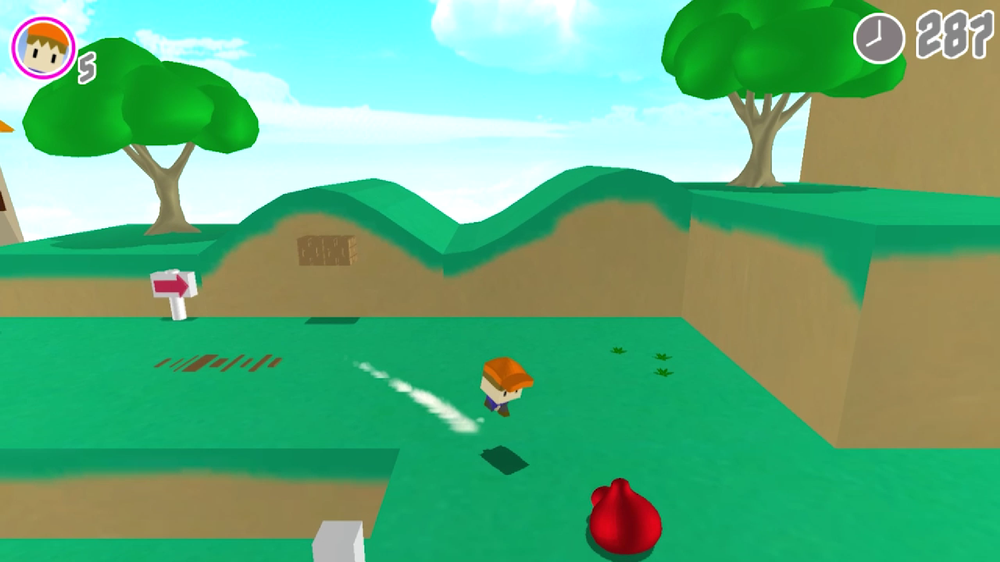
ゲームクリア
ゴールにある宝石を手に入れるとゲームクリアです。
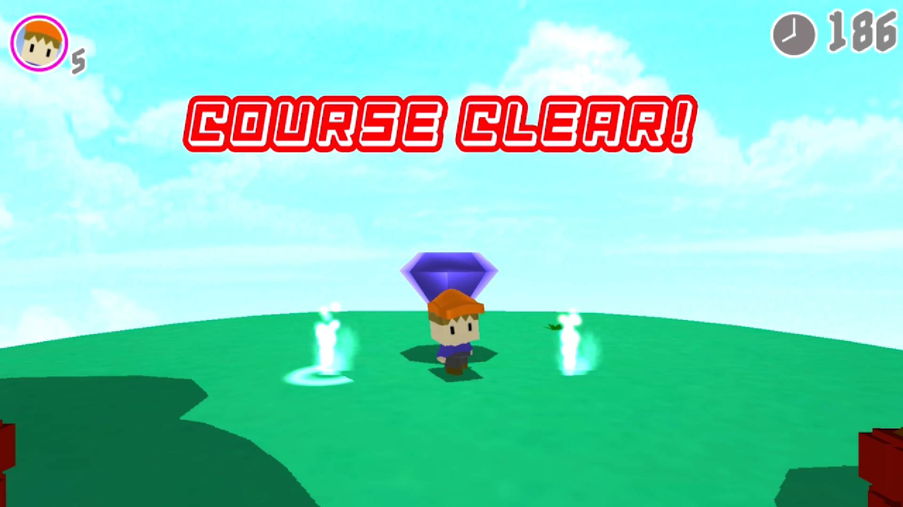
ゲームオーバー
左上に表示されている残機が０になるか、右上に表示されている制限時間が０になるとゲームオーバーです。
残機は、敵に倒されるかステージ外に落ちると１ずつ減っていきます。
残機が減った場合、規定の位置に戻ります。
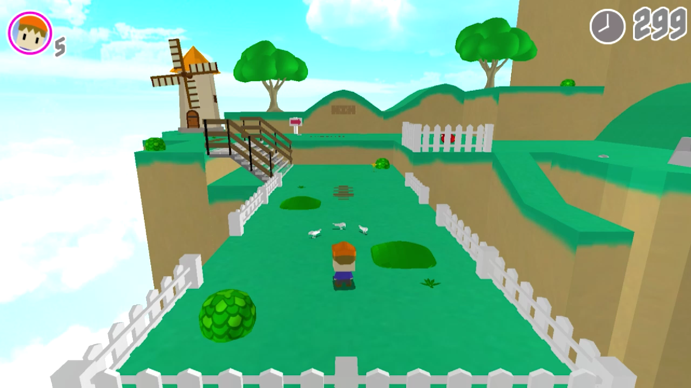
様々な既存のゲームで操作をせずにしていると、キャラクター独自のモーションに変化することを参考にしました。
一定時間操作していないと待機モーションが変化するようにしました。
Lスティック＋ダッシュボタンでプレイヤーがダッシュします。
一定時間ダッシュし続けるとスーパーダッシュに変化します。
通常ダッシュとスーパーダッシュでは、速度が異なります。
通常ダッシュでは超えられない場所も、スーパーダッシュで超えることが出来ます。
歩き、ダッシュ、スーパーダッシュの差別化
移動をやめた時、現在の速度を徐々に落とす事で慣性が付くようにしました。
カメラ切り替え時の移動処理
カメラを途中で切り替えた時、プレイヤーの移動方向が急に変わり操作のしづらさを感じたため、既存の3Dゲームを参考に実装しました。
カメラの前、右方向とスティックの方向を使いプレイヤーの移動を実装しました。[1]
カメラ切り替え時、１フレーム前のカメラ方向を使い移動方向維持するようにしました。[2]
スティックの入力方向が変わるか、スティックを離すことで、現在のカメラ方向に移動方向が変わるようにしました。[3]

 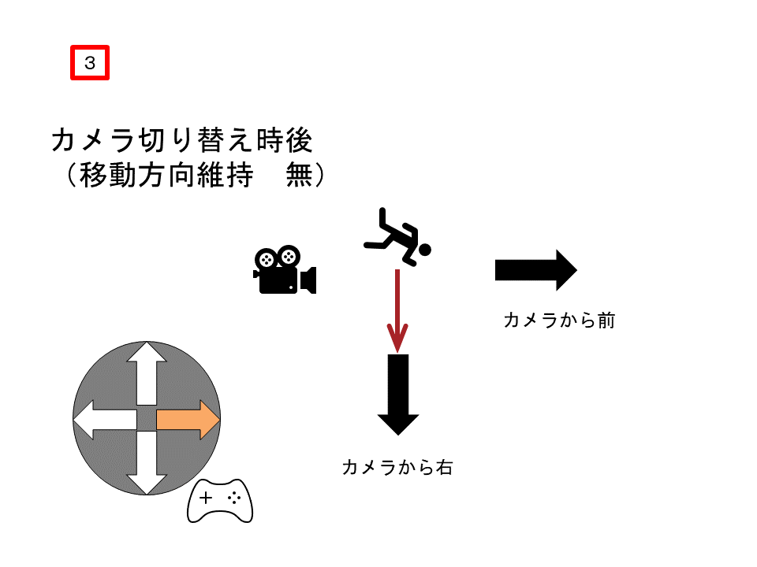
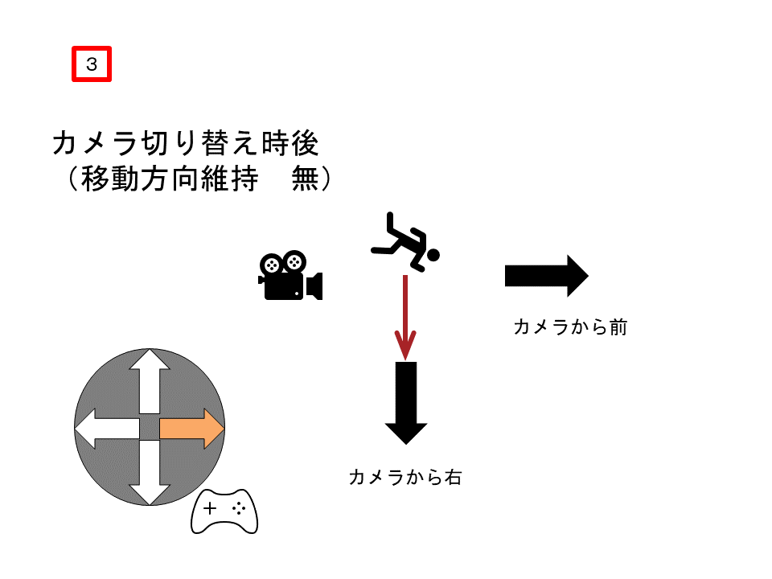
実際のゲーム画面
ジャンプ
敵を踏んで倒す、ブロックを破壊する時に使います。
ジャンプをすると再び着地するまでジャンプ出来ませんが、ジャンプで敵を倒すと再びジャンプすることが出来ます。
ジャンプボタンを押した時間によって、ジャンプ力が変化します。
マリオはジャンプした時の軌道が放物線にならないのが特徴的です。これは、上昇速度と下降速度が異なるからです。
そこで、上昇中の重力を弱くし、下降中の重力を強くすることで、再現しました。
これにより、狙った地点へ速く着地することができます。

ヒップドロップ
空中でヒップドロップボタンを入力でプレイヤーがヒップドロップします。
敵を倒す、ブロックを破壊する用途の他に、素早く真下に着地することが出来ます。
ヒップドロップ中はLスティックの操作は効かないようにしています。
アニメーションイベントを利用して、回転中は重力を０に、回転後は強い重力を与えています。
問題点と解決
しかし、ヒップドロップで敵を倒そうとすると、プレイヤーの落下速度が速すぎて敵を倒せていても敵の攻撃判定に衝突し相打ちしてしまう（敵が倒れる時に敵の攻撃判定も消える為）ので、ヒップドロップ落下中は無敵にする事にしました。
ですが、無敵にしてしまうと全ての敵を安全に倒せるようになってしまうと考え、着地してから再度動けるようになる時間を長めに設定しました。
これにより、目の前の敵に対してヒップドロップを外す、または別の敵に攻撃されるリスクを付けバランスを調整しました。
プレイヤーのモデルに合わせて、ローポリゴンで作成しました。
画面に動きが欲しかったので、所々の背景モデルにアニメーションを追加しました。

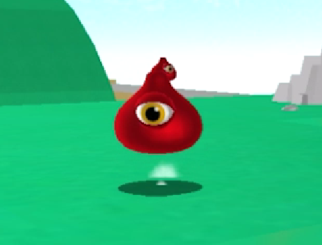
プレイヤーを見つけると地面を素早く跳ねて追いかけてきます。（XZ軸移動）
段差を降りることは出来ますが登るのことは出来ません。
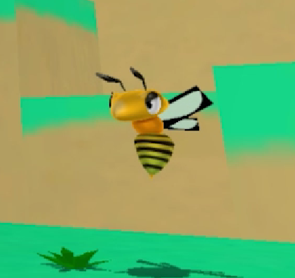
プレイヤーが近づくと追いかけてくるように移動します。（XYZ軸移動）
スライムとは違い、飛んで追いかけてくるためY軸も移動させるようにしました。
スライムと違い段差を無視出来ますが、ダッシュで逃げ切れるほど移動速度が遅くなっています。
プレイヤーと全く同じ高さで追いかけてくると踏んで倒しにくいため、プレイヤーの少し下を追いかけてくるようにしています。

砲弾を発射し攻撃してくる遠距離エネミーです。
本体に攻撃判定はありませんが、ジャンプでは倒せずヒップドロップを使う必要があります。
また、砲弾を踏むことで、距離を詰めやすくなります。
遠距離攻撃を行う敵とヒップドロップでしか倒せない敵が欲しかった為、制作しました。
基本的な当たり判定
敵の側面からぶつかるとプレイヤーが死亡し、真上から踏むと敵が死亡します。

壊せるブロック
当たり判定
プレイヤーの足元の判定とブロックの当たり判定が衝突すると、プレイヤーの重力が０になります。[１]
プレイヤーの頭上の判定・ヒップドロップの判定とブロックの当たり判定が衝突すると、ブロックが破壊されます。[2]
これだけでは、プレイヤーがブロックの真横から衝突しようとするとブロックを貫通してしまう為、プレイヤーの身体に当たり判定を追加してブロックの当たり判定と衝突すると、プレイヤーのXZの移動速度を０にすることでブロックに当たって止まっているように見せました。[1]
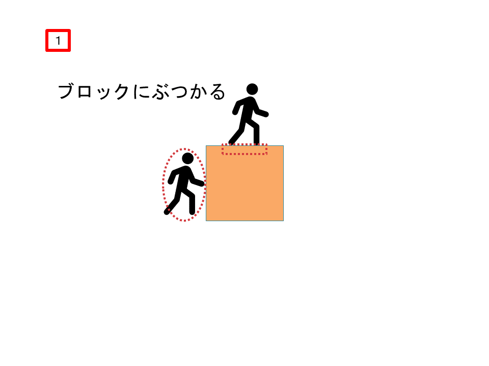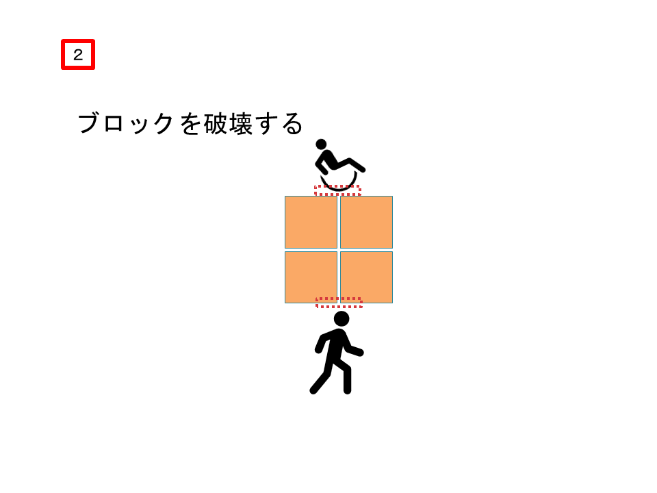
大砲
プレイヤーが大砲に近づくと大砲のアニメーション再生され発射、 空中にある当たり判定 まで移動します。この時、重力を０ にします。
そして、空中の当たり判定にプレイヤーが衝突すると、速度を徐々に落とします。また、この時に 重力を元に戻す ことで着地します。

カメラ
所々でカメラの切り替えを行いました。
奥行きを分かりやすくするカメラ
大砲用のカメラ
ゴール用のカメラ
プレイヤーをターゲットとして、宝石と一直線の角度になるように視点を計算しています。
このため、どの方向から宝石に近づいても、プレイヤーを正面から見ることができます。
影
ジャンプなどの着地先を分かりやすくする為、ライトカメラの方向を 真下 に設定しました。
プレイヤーの座標を中心に 影の濃さ を変更しています。（プレイヤーから離れるほど薄くなる）
これにより少しでも、処理負荷を掛けないようにしています。
まず，一度シーンを描画します。そのとき、カメラ空間における位置情報、深度情報と法線情報を出力します。
出力した深度テクスチャ
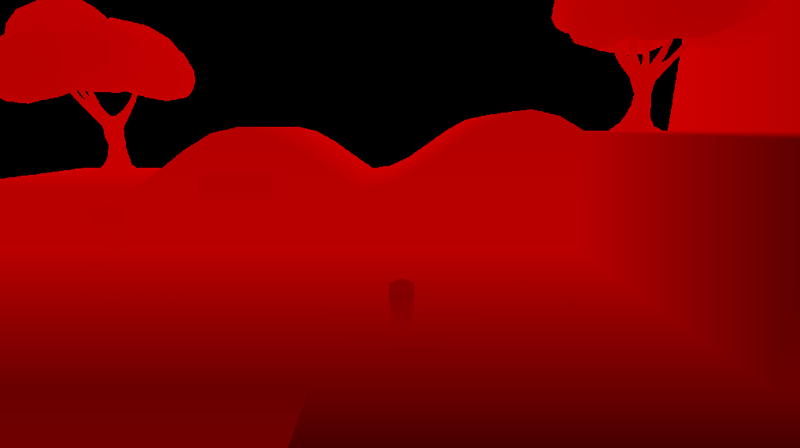
出力した法線テクスチャ
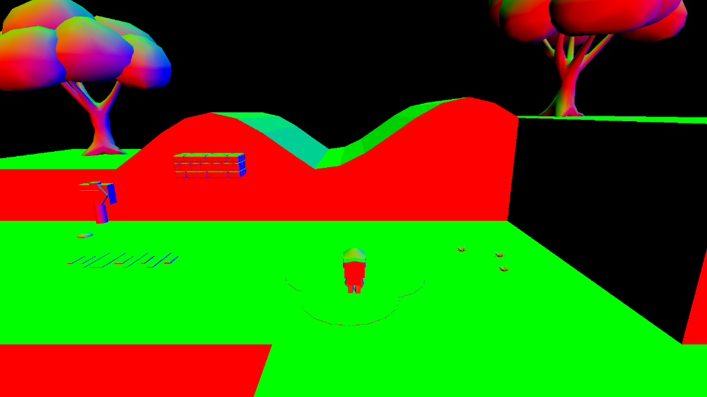
また、今回は部分的に反射させたいため、 スムースネステクスチャからスムースの値（α）にアクセスし1.0の 箇所だけ反射するようにする。
出力したスムースネステクスチャ
次にカメラ位置からスクリーン上の各ピクセルにおける位置に向かうベクトルと法線ベクトルから反射ベクトルを求めます。位置から反射ベクトル方向に深度バッファを使い、物体と交差したときに、その位置を投影したピクセルをサンプリングして周囲からの反射光として計算します。反射を計算したシーンはアーティファクトが目立ってしまうので、ぼかしをかけます。そして、元のシーンを合成します。
反射ベクトルを使ってシーンとの衝突判定を行う。
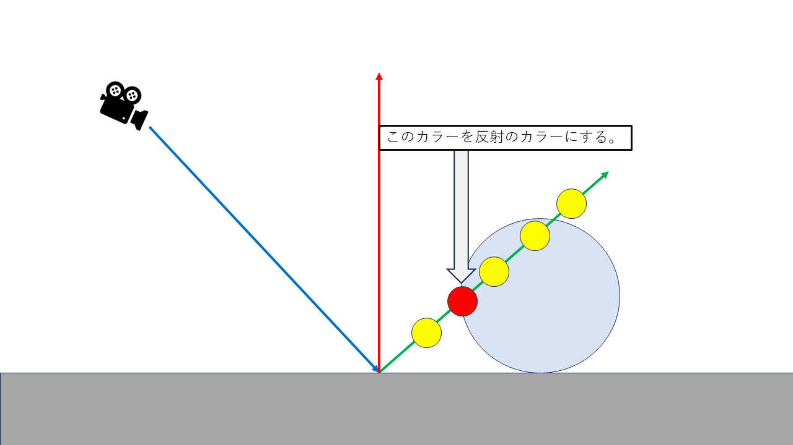
出力した反射テクスチャ・ぼかし無し
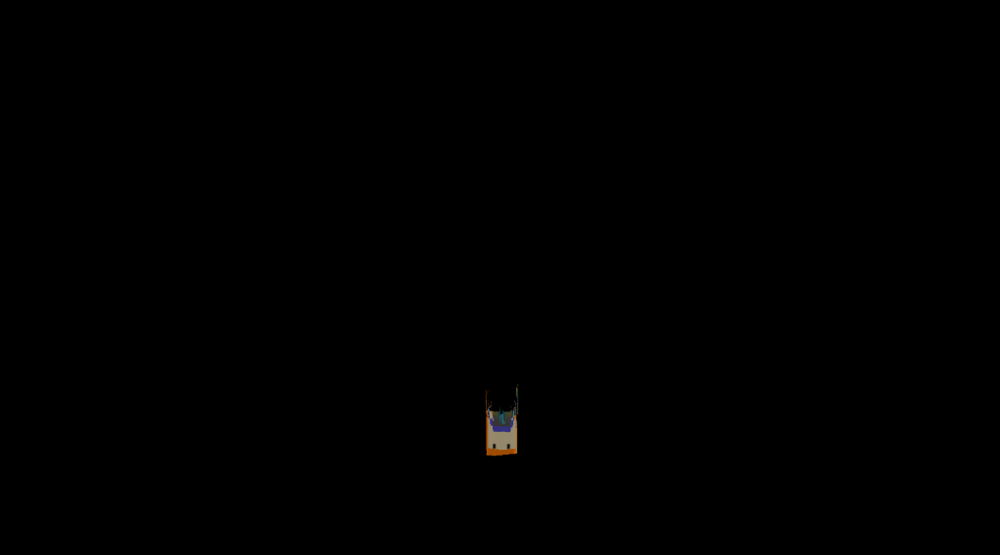
出力した反射テクスチャ・ぼかし有りの一部
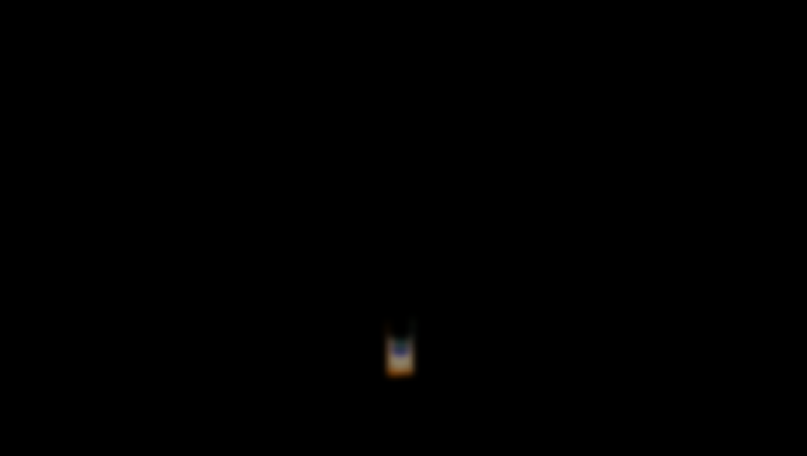
合成されたシーン・ぼかし有り
全反射・ぼかし無しの場合
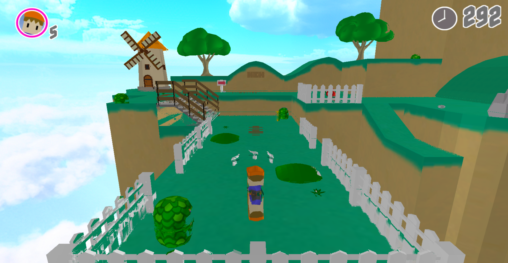
Fast Approximate Anti-Aliasing(以下、FXAA)とは、すばやく近似するアンチエイリアシングと言うことで、他のアンチエイリアシング技法と比べて軽く、簡単にジャギーを軽減することができる技法。
FXAAの手法は極めてシンプルなもので、「ピクセル色を周囲と比較して輝度差を調べ，輝度差があるピクセルの色は周囲と混ぜ合わせる」というものになっている。
たとえば、背景とオブジェクトには大きな輝度差があるとしよう。このとき、あるピクセルで周囲との輝度の差を調べ、輝度の差があれば、オブジェクトの縁の部分がピクセルに乗っている可能性があると判断できる。ピクセルの輝度の差（＝輝度差の大きいピクセルのエッジ）をとっていくことで、オブジェクトの縁（へり）を推定できるわけだ。
そしてこの「推定できた縁」に沿って、「縁が横切る比率」に基づいてピクセルの色を混ぜ、それによって輪郭をぼかそうというのがFXAAの基本的な考え方になる。
FXAAではサブピクセルを使わずに済むのが利点だ。要は、2Dレベルの画像処理で、ギザギザ感を低減できる。また、輝度の差があればブレンドが行われるので、テクスチャに描かれた線のようなものに対しても有効に機能する。
実際のゲームではポストエフェクトとしてFXAA処理が行われるのだが「FXAAのシェーダコードはかなり長い」ものの「レイテンシは0.1msやその程度で済む」と竹重氏は述べていた。輪郭を検出して色のブレンドを行う処理は相応に複雑だが、「深度が格納されているバッファ（＝Zバッファ）を参照する」作業が不要で、かつ、現在のGPUはシェーダコード――より具体的に言えばピクセルシェーダのコード――を高速に実行できるため、FXAAのレイテンシは極めて低いのだろう。つまり、GPUで長いシェーダコードを高速に実行できるようになったからこそ可能になったAA技法と述べていいかもしれない。
引用元 https://www.4gamer.net/games/120/G012093/20121125002/
1,まず、FXAAをかけた絵を描画するためのFXAA用のレンダリングターゲットを切り替えます。
2.元シーンをテクスチャとしてスプライトを描画し、アンチをかけます。
3.レンダリングターゲットを元シーンに切り替え、2のスプライトを描画します。
FXAA無し(元シーン)の場合
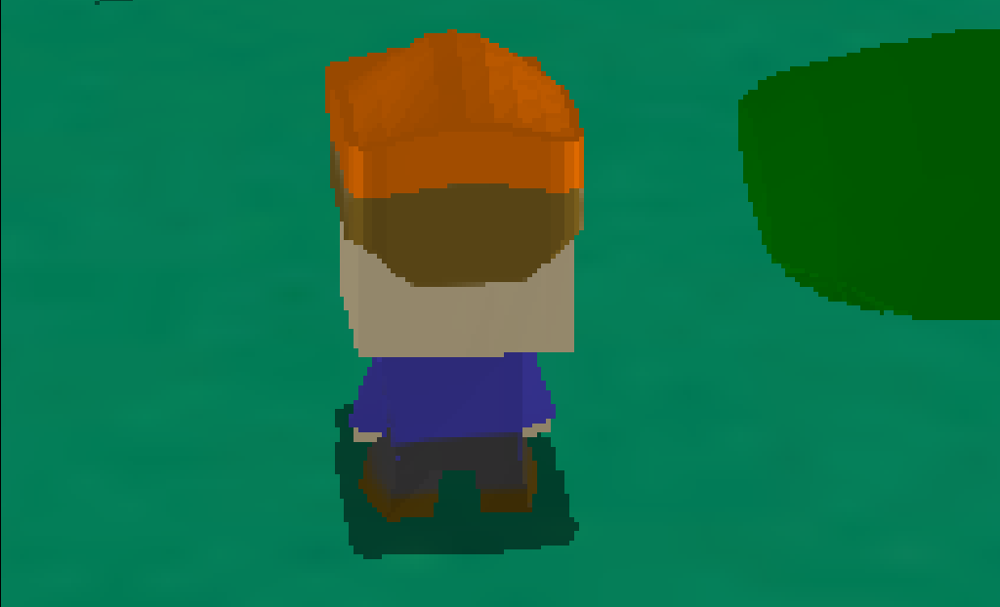
FXAA ありの場合
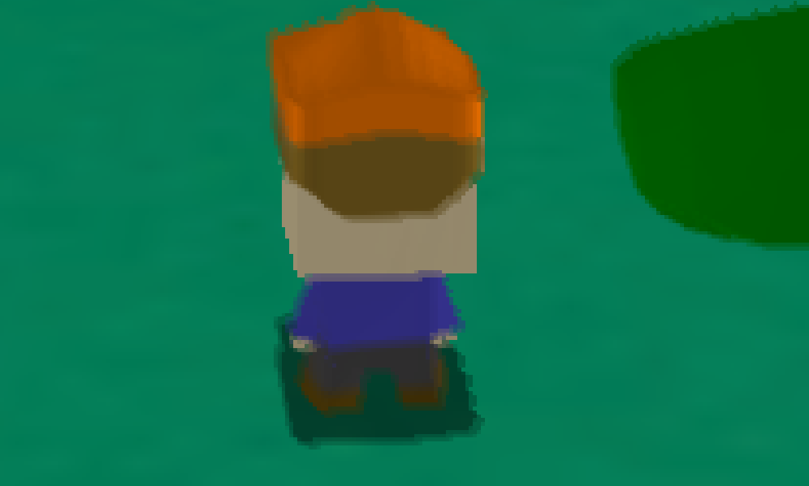